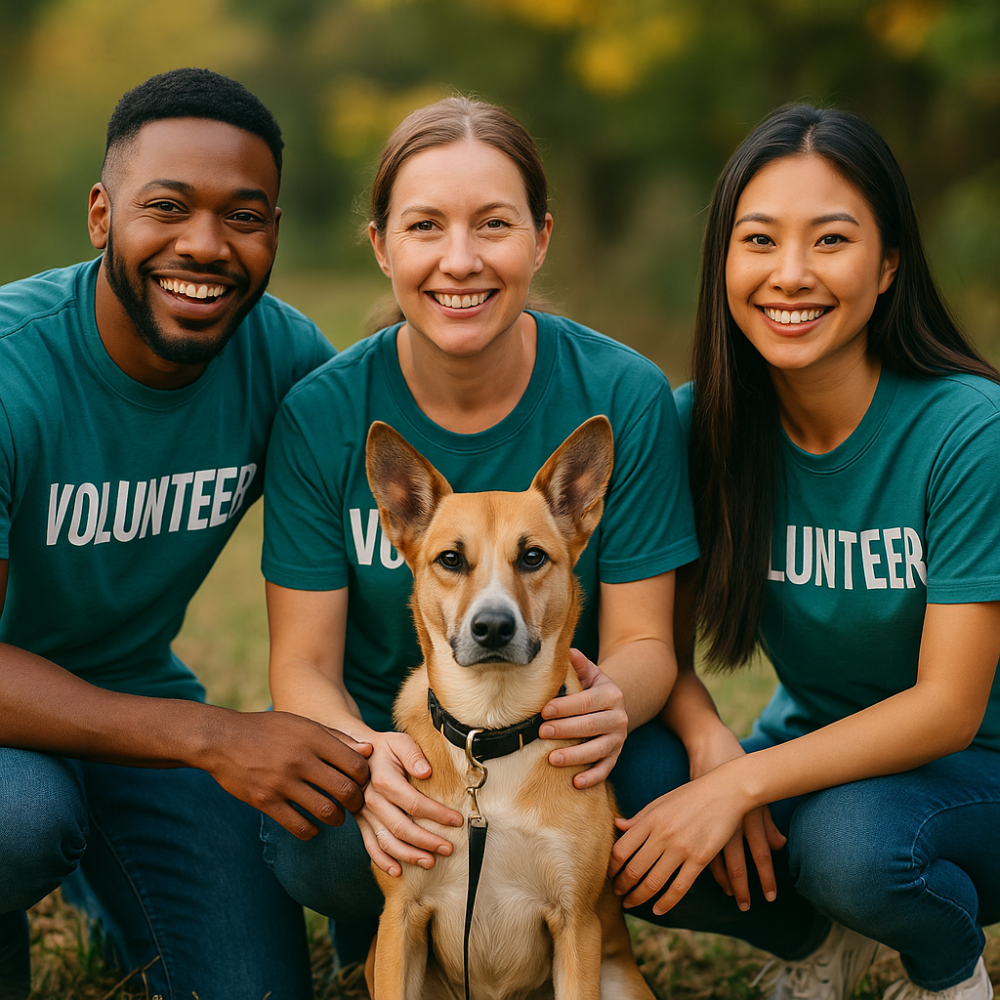

💕 For Adopters: Find the Right Soul, Not Just a Pet
Compawss is your companion in the adoption journey. We connect you to all adoptable animals listed in shelters in your country — or in the case of the EU, in any participating country.
🐞 But we go beyond lists. With our AI Matchmaking System, we learn about your lifestyle, energy level, family environment and wishes — and suggest animals whose personalities and needs match yours beautifully.
Whether you dream of a senior cat, a joyful dog, a clever parrot, a cuddly rabbit or even a calm reptile — Compawss helps you find the one who’s waiting for you.

🤝 For Volunteers: Help Where It’s Most Needed
Volunteering doesn't have to be confusing or limited. With Compawss, you can see all shelters and organizations currently seeking help — both locally and internationally.
Whether you have one hour a week, a special skill, or simply a big heart, Compawss connects you with volunteer tasks that matter — from walking dogs, caring for exotic pets, assisting at events or helping online.
You choose when and how to give your time — and we make sure it has impact.
🏢 For Shelters: Share Events and Reach More People
Shelters and rescues often struggle to spread the word about adoption fairs, open-door days or fundraisers. Compawss fixes that with our AI-powered event booster: enter your event, and we help share it in communities and social media, reaching the people who care.
Your event deserves visibility — and your animals deserve a chance.
🌿 For Everyone: An Animal Welfare Mission
At Compawss, we believe every animal deserves love, care and a home. With AI’s help, we make finding meaningful connections faster, smarter and more inclusive. We care for animals of all kinds — cats, dogs, rabbits, snakes, iguanas, chinchillas and more.